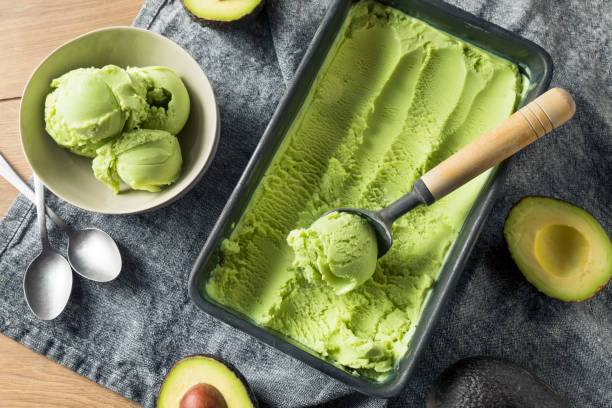
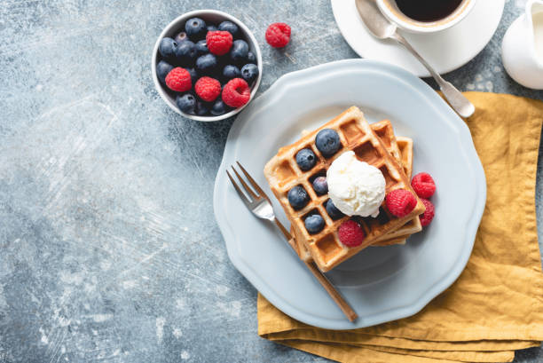
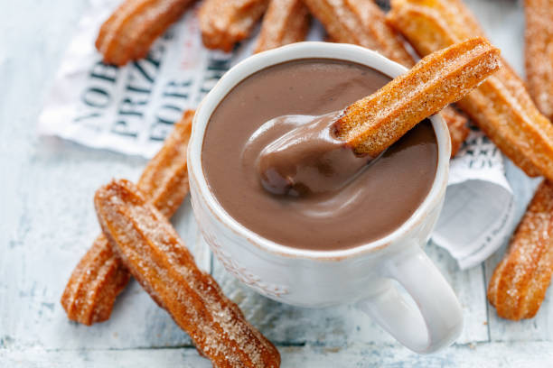

|  |
Es krim adalah sebuah makanan beku dibuat dari produk susu seperti krim (atau sejenisnya), digabungkan dengan perasa dan pemanis buatan ataupun alami. Campuran ini didinginkan dengan mengaduk sambil mengurangi suhunya untuk mencegah pembentukan kristal es besar. Tradisionalnya, suhu dikurangi dengan menaruh campuran es krim ke sebuah wadah dimasukkan ke dalam campuran es pecah dan garam. Garam membuat air cair dapat berada di bawah titik beku air murni, membuat wadah tersebut mendapat sentuhan merata dengan air dan es tersebut.
Meskipun istilah es krim sering digunakan untuk menunjuk ke "dessert" beku dan makanan ringan, tetapi sebenarnya digunakan unuk menunjuk ke "dessert" beku dan makanan ringan yang terdiri dari lemak susu. Banyak negara, termasuk Amerika Serikat, membatasi penggunaan istilah tersebut berdasarkan kuantitas dari bahan dasar makanan tersebut. |
|  |
Wafel adalah adonan-atau kue adonan yang dimasak dengan berbasis besi wafel yang bermotif untuk memberikan bentuk khas dan karakteristik tertentu. Ada banyak variasi berdasarkan jenis dan bentuk dari besi dan resep yang digunakan.
Wafel menjadi makanan kegemaran di seluruh dunia, terutama di Belgia dan Amerika Serikat. Topping umum yang digunakan adalah dengan stroberi, coklat, gula, madu, sirup, es krim, dan banyak lagi. |
|  |
Churro atau churros adalah sejenis makanan kecil yang berasal dari negeri matador, Spanyol. Kue ini memiliki bahan utama yaitu tepung terigu dan dibentuk sedemikian rupa sehingga berbentuk memanjang.
Pastri ringan dan renyah ini memang cukup populer di daratan Eropa, meski keberadaannya juga sudah cukup familiar bagi masyarakat Asia. |
|